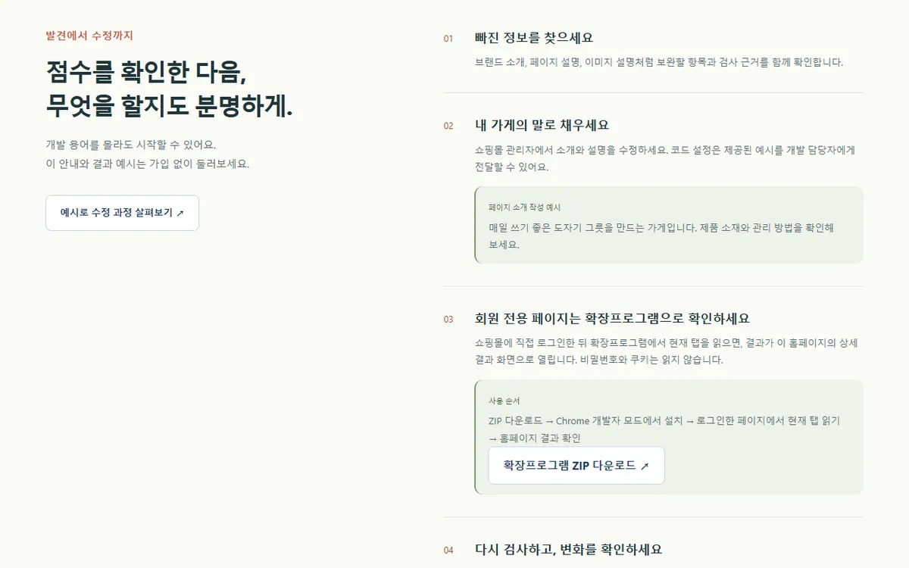

가게 체크 · AI Visibility Check
쇼핑몰 주소 하나로 AI가 읽을 정보와 고객에게 보여줄 정보를 점검하고, 먼저 고칠 3가지를 알려주는 진단 서비스. (2026.09)
자동 테스트 56개 · 운영 통합 점검 25개 통과, 무료 한도 안에서 운영되는 진단 서비스 공개
기획 의도와 구현 내용 보기
기획 의도 · WHY“당신의 쇼핑몰은 사람 손님과 AI 손님, 둘 다 받을 준비가 되어 있나요?” — 운영자는 무엇이 빠졌는지 알아도 개발 용어가 어렵고 어디를 고쳐야 할지 몰라 실행하지 못합니다. 기술 용어 대신 질문과 수정 안내를 먼저 보여주는 서비스로 기획.
내가 직접 구현한 것
- 진단의 약 70%를 LLM 없이 HTML·robots.txt 규칙 기반 파싱으로 판정 — AI 호출 한도가 바닥나도 결과가 나오도록 설계
- AI 정보·고객 정보 2축 점수와 15개 세부 항목, 근거와 함께 먼저 고칠 3가지·코드 예시·재검사 전후 비교 제공
- Gemini로 소개 문구·고객 질문·FAQ 초안을 만들고, 브랜드명을 알려주지 않은 질문으로 AI가 가게를 아는지 따로 확인
- 이메일 인증 + Google·카카오·네이버 로그인, 90일 검사 이력, 30일 공유 보고서·PDF, 로그인 페이지용 Chrome 확장프로그램
- 쇼핑몰 55곳 실태 조사 중 robots.txt 허용목록을 ‘차단’으로 잘못 읽는 오류를 공개 전에 원본 대조로 찾아 수정
역할기획 · 풀스택 · 배포 단독 개발